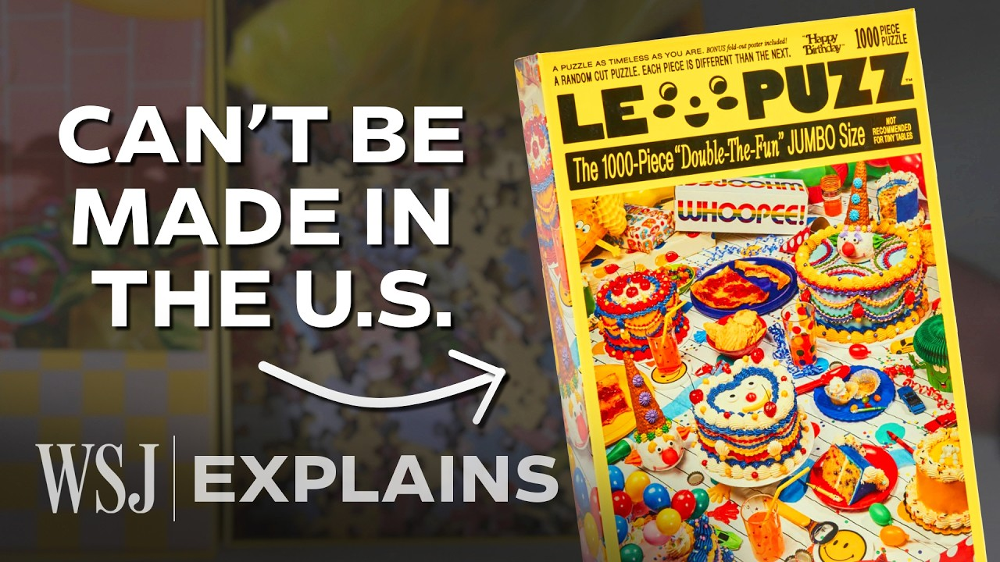

【为何美国小企业无法离开中国 | 《华尔街日报》】
Summary: Small puzzle company Le Puzz faces tariffs on Chinese-made products, highlighting challenges of relocating manufacturing to the US due to complex global supply chains, quality gaps, and economic feasibility.
摘要： 小型拼图公司Le Puzz因中国制造的产品面临关税，凸显了由于复杂的全球供应链、质量差距和经济可行性，将生产迁回美国的挑战。

⏱️ Estimated Reading Time: 11 min
(bright music) - [Narrator] This is Le Puzz.
（欢快的音乐）- [旁白] 这是Le Puzz。
They're a small puzzle company based in Brooklyn, New York.
他们是一家位于纽约布鲁克林的小型拼图公司。
And like a lot of small businesses in the toy and game industry, their puzzles are made in China.
和玩具游戏行业的许多小企业一样，他们的拼图是在中国制造的。
So when they got a shipment delivered in March, they were hit with a tariff.
因此，当他们在三月份收到一批货物时，被征收了关税。
So we got our first bill for, - 20%.
所以我们收到了第一张账单，- 20%。
20% on that manufacturing cost.
制造成本的20%。
[Narrator] President Trump's tariffs are in part, designed to make companies like Le Puzz make their products in the US.
[旁白] 特朗普总统的关税部分目的是为了让像Le Puzz这样的公司在美国生产产品。
If you have your company here, if you build your product, make your product, make your car, or whatever it is you're making, no tariffs.
如果你的公司在这里，如果你在这里生产产品、制造汽车或任何东西，就没有关税。
[Narrator] But as they are learning, moving manufacturing completely to the US is not always possible.
[旁白] 但他们逐渐意识到，将生产完全转移到美国并不总是可行的。
Even if we could make our exact same product for maybe just a little bit more here, I think we would probably do that.
即使我们能在这里以稍高的成本生产完全相同的产品，我想我们可能会这样做。
Yeah.
是的。
But as it stands, it seems like we can't make our exact product here.
但就目前而言，我们似乎无法在这里生产完全相同的产品。
[Narrator] Here's why.
[旁白] 原因如下。
Let's look at what it actually takes to make a puzzle.
让我们看看制作拼图实际需要什么。
[Alistair] So there's the ink, the paper, the cardboard.
[Alistair] 所以有墨水、纸张、纸板。
[Narrator] The machines, the glue, the plastic packaging.
[旁白] 机器、胶水、塑料包装。
Here's all the industries needed to even make the cardboard in the first place.
这是首先制作纸板所需的所有行业。
And the industries needed to make the ink.
以及制作墨水所需的行业。
And those industries also need these industries.
而这些行业也需要这些行业。
This is really what a supply chain looks like.
这才是供应链的真实面貌。
The term supply chain, I almost wish we would move away from it, because it really oversimplifies things, and really it's an entire ecosystem that exists.
供应链这个词，我几乎希望我们不再使用它，因为它过于简化了事情，实际上它是一个完整的生态系统。
[Narrator] And it's not easy or even possible to move every component to the US, because this system is so global.
[旁白] 将每个组件转移到美国并不容易甚至不可能，因为这个系统是如此全球化。
Most puzzles made in the US actually use specialized cardboard from Europe.
大多数在美国制造的拼图实际上使用来自欧洲的特殊纸板。
And nearly all the dies, the shape that cuts the pieces, are made in Europe or China.
几乎所有用于切割拼图形状的模具都是在欧洲或中国制造的。
Sure, they could be made in the US, but would it be economically feasible?
当然，它们可以在美国制造，但这在经济上可行吗？
In many instances where there's already competitors overseas that are very experienced at making types of goods, setting up production in the United States, especially for something that's highly specialized in volume is gonna be very small.
在许多情况下，海外已经有非常擅长制造某类商品的竞争对手，在美国建立生产，尤其是对于高度专业化且产量较小的产品来说，规模会非常小。
It's just not cost competitive.
这根本没有成本竞争力。
And certainly because of the knowledge that that oversees supplier has, the initial quality coming from the US is not going to match that overseas supplier.
当然，由于海外供应商拥有的知识，来自美国的初始质量无法与海外供应商相比。
[Narrator] That quality gap is because of the learning curve.
[旁白] 这种质量差距是由于学习曲线。
This is the classic one.
这是一个经典的例子。
How long it took to build a B-17 plane during World War II.
二战期间建造一架B-17飞机花了多长时间。
When they started, it took more than 140,000 labor hours to make one plane.
刚开始时，制造一架飞机需要超过14万工时。
A year in, it took a third of that time.
一年后，时间缩短到三分之一。
[Jason] As you start producing more and more of a product, you become much more efficient.
[Jason] 当你开始生产越来越多的产品时，你会变得更高效。
[Narrator] And also, highly skilled.
[旁白] 而且技术也会更熟练。
For many categories of goods where sourcing has shifted predominantly to China, Chinese manufacturers have been producing tens of thousands, hundreds of thousands, or even millions of units.
对于许多主要采购已转移到中国的商品类别，中国制造商已经生产了数万、数十万甚至数百万件产品。
And that means that they're highly specialized in making these goods.
这意味着他们非常擅长制造这些商品。
In the US, volumes are much smaller, and so it's a more standardized product.
在美国，产量要小得多，因此产品更加标准化。
[Narrator] For example, the reason iPhones are made in China isn't because of labor costs.
[旁白] 例如，iPhone在中国制造的原因不是因为劳动力成本。
The reason is because of the skill.
原因是技术。
[Narrator] As Le Puzz has also found out.
[旁白] 正如Le Puzz也发现的那样。
Their puzzle isn't standard.
他们的拼图不是标准的。
This is everyone's least favorite corner piece.
这是大家最不喜欢的角落拼图块。
[Narrator] Their hand-drawn, custom-cut pieces come in a resealable bag with a double-sided poster.
[旁白] 他们手工绘制、定制切割的拼图块装在一个可重新密封的袋子里，附带一张双面海报。
They are unusually thick pieces and have colorful backs.
这些拼图块异常厚实，背面色彩丰富。
And the box is even printed on the inside.
盒子内部甚至也有印刷。
A lot of times people will use the box lid and bottom as sorting trays.
很多时候人们会用盒子的盖子和底部作为分类托盘。
So we wanted to make those kind of special.
所以我们想让这些部分变得特别。
[Narrator] As they've looked for a US manufacturer, they haven't been able to find one to say yes to all this customization.
[旁白] 当他们寻找美国制造商时，他们找不到一个能答应所有这些定制要求的厂家。
[Alistair] And all of that isn't necessary to a good puzzle, but it's kind of necessary to our good puzzle.
[Alistair] 所有这些对于一个好的拼图来说并不是必需的，但对于我们的好拼图来说是必要的。
[Narrator] Plus, because of this supply chain, I mean, ecosystem, they would have to invest in new dies from Europe.
[旁白] 此外，由于这个供应链，我是说生态系统，他们将不得不投资从欧洲购买新的模具。
That would also be tariffed.
这些也会被征收关税。
To think that we were gonna have to make upwards of like a $35,000 investment, in just the die lines, we were like, "Wow, that's like a lot of risk for us to take on," not even knowing if these tariffs are gonna stay in place.
想到我们仅模具线就需要投资超过3.5万美元，我们觉得，“哇，这对我们来说风险太大了”，甚至不知道这些关税是否会持续。
Not to mention how long they're gonna take to make.
更不用说制作它们需要多长时间。
I almost feel like we didn't even have an option.
我几乎觉得我们别无选择。
Right, yeah.
是的，没错。
Like we have to move forward with our current manufacturer.
我们只能继续与当前的制造商合作。
[Narrator] What staying with China will cost is unclear.
[旁白] 继续与中国合作将花费多少尚不清楚。
145%?
145%？
30%?
30%？
[Alistair] We kind of just hold our breath, and see what the tariff is the day it lands.
[Alistair] 我们只能屏住呼吸，看看货物到达那天的关税是多少。
If that means we have to raise our price, then we're gonna have to raise our price.
如果这意味着我们必须提高价格，那么我们就必须提高价格。
That's, I mean, that's really what you're faced with.
这就是，我是说，这就是你面临的现实。
[Narrator] That wouldn't just affect their small business, but many of the other small businesses they work with.
[旁白] 这不仅会影响他们的小企业，还会影响他们合作的许多其他小企业。
The making of a puzzle is more than just manufacturing.
制作拼图不仅仅是制造。
It involves a lot of people.
它涉及很多人。
Stylists, designers, Le Puzz employees, renting out the studio space, web design.
造型师、设计师、Le Puzz员工、租用工作室空间、网页设计。
And then there's the employees at the warehouse, marketing, shipping, and then all the retail stores.
还有仓库员工、市场营销、运输以及所有零售商店。
The bulk of our business is, - Mom and pop.
我们的大部分业务是，- 夫妻店。
Is mom and pop-like shops, game stores.
是夫妻店式的商店、游戏店。
What's important to understand is, production in the United States in this industry is generally minimal.
重要的是要明白，美国在这个行业的生产通常很少。
There's about 5,600 individuals employed across all the doll, toy and game plants in the United States.
美国所有玩偶、玩具和游戏工厂雇用了大约5600人。
In comparison, just its specialized retailers that sell hobbies, games, and toys, there's about 128,000 individuals employed in those stores.
相比之下，仅销售爱好、游戏和玩具的专业零售商就雇用了约12.8万人。
[Narrator] This is who will face the effects of the tariffs, besides the US manufacturers who now have added costs.
[旁白] 这就是将面临关税影响的人群，除了现在成本增加的美国制造商。
And so what's important to understand is when you make these products much more expensive, you are expecting declining consumer demand, and that ends up costing far more jobs in the retail and wholesale sector than you would ever gain back in manufacturing.
因此，重要的是要明白，当你让这些产品变得更贵时，你会预期消费者需求下降，这最终会导致零售和批发行业失去的工作岗位远远超过你在制造业中可能获得的。
[Narrator] The economic puzzle of where to manufacture has many pieces.
[旁白] 关于在哪里制造的经济拼图有许多部分。
Tariffs are the ever changing one.
关税是不断变化的部分。
[Speaker] Oh no.
[说话者] 哦不。
Of all the things!
在所有事情中！